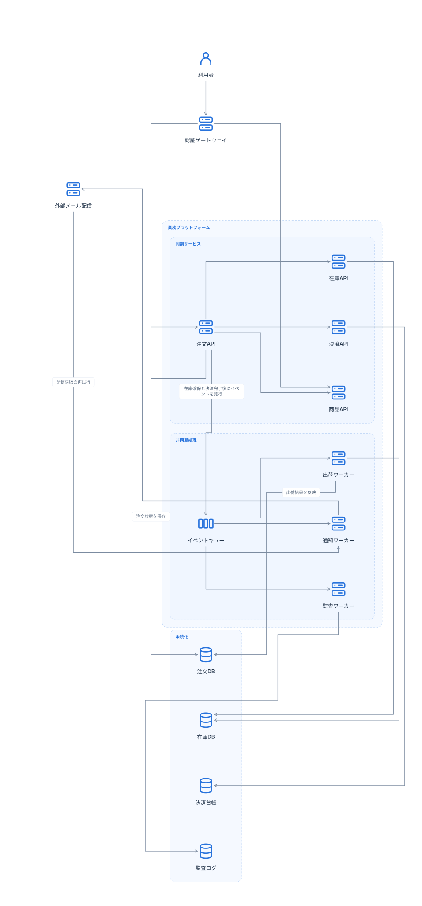
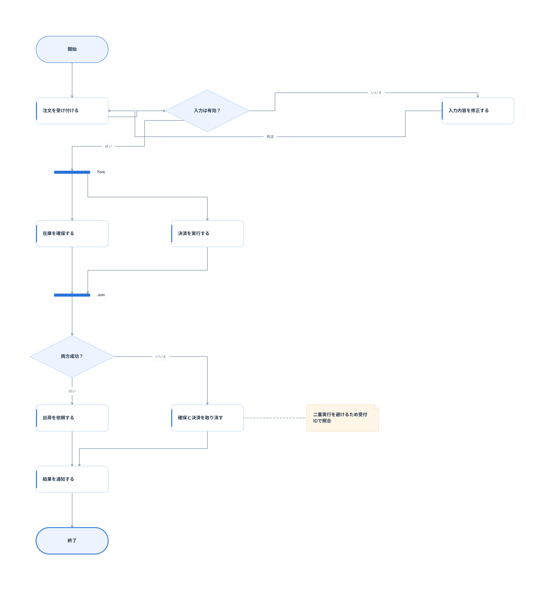
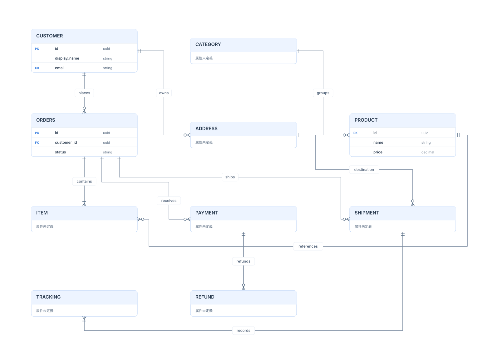
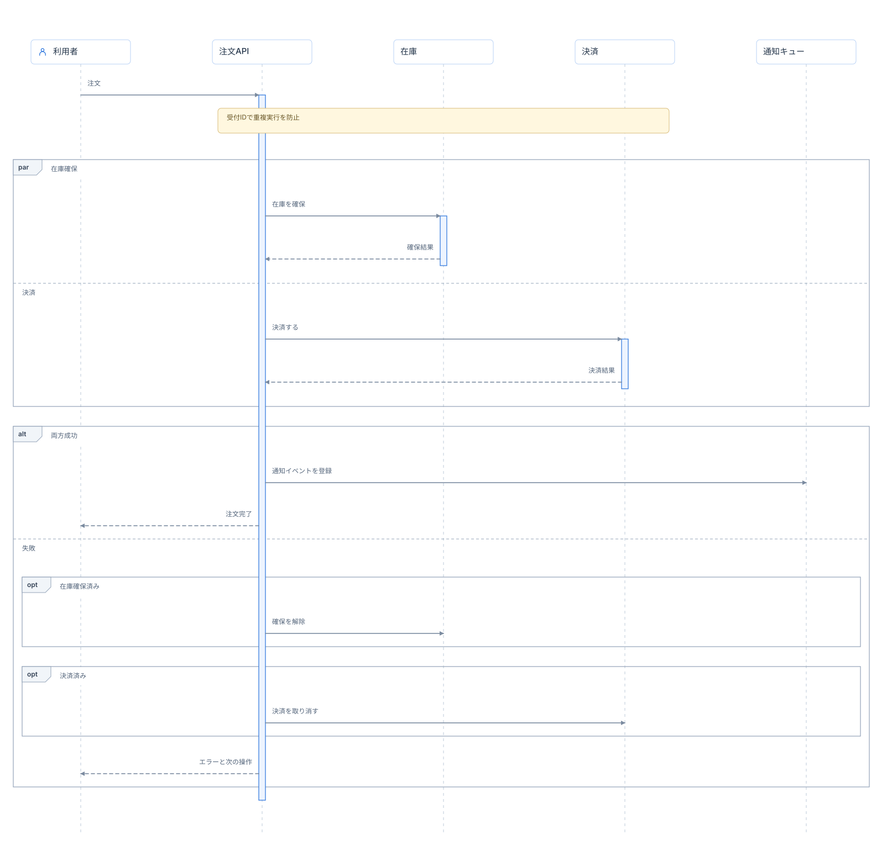

3図種×4方向とシーケンス、追加の宣言順テスト2件。全209テスト通過。図形・意味・文字サイズを維持し、交差・重なりが調整OFFより増えないことを確認しました。
以下の代表4図はAUTOでも従来配置を維持しています。構成図には長い外周線や交差が残り、複雑な図の全てを短くできたという結果ではありません。検証中に見つかった「後から宣言したchoice/fork/joinが四角になる」不具合は修正済みです。OFF/AUTOの両方にその修正を適用しています。
ソース · 調整OFF · 調整AUTO



